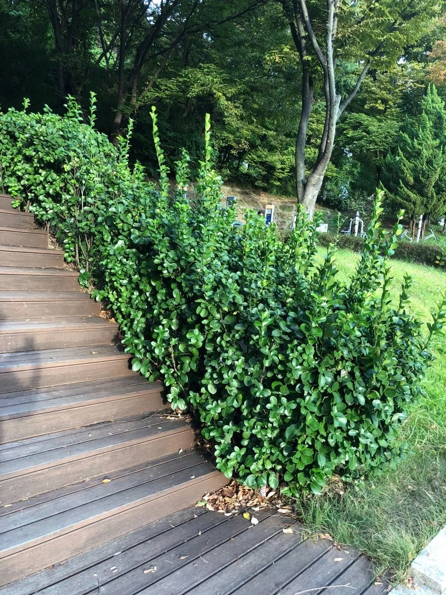

Gallery

Details
- 학명: Euonymus japonicus
- 분류: 노박덩굴과 화살나무속
- 원산지: 한국, 일본, 중국
- 형태적 특징:
- 높이: 3~5m
- 잎:
- 마주나는 타원형 또는 난형
- 길이 3~7cm, 너비 3~4cm
- 두껍고 가죽질, 짙은 녹색 광택
- 가장자리에 둔한 톱니 존재
- 꽃과 열매:
- 꽃:
- 6~7월에 개화
- 황록색, 지름 7mm
- 취산꽃차례에 모여 달림
- 열매:
- 삭과, 직경 약 7mm
- 붉은색으로 익음
- 겨울에 열매껍질 4조각으로 갈라짐
- 꽃:
- 생태적 특징:
- 생육환경:
- 내공해성 강함
- 내한성 강함
- 내염성 강함
- 선호 환경: 비옥한 토양, 양수
- 생육환경:
- 용도:
- 공원수
- 정원수
- 생울타리
- 경계 식재
- 하목용
- 특이사항:
- 사계절 푸른 잎으로 유명
- 공해에 강해 도시 환경에서도 잘 자람
- 관상 및 조경용으로 널리 사용됨
Location
경기도 부천 원미구 원미동, 원미공원